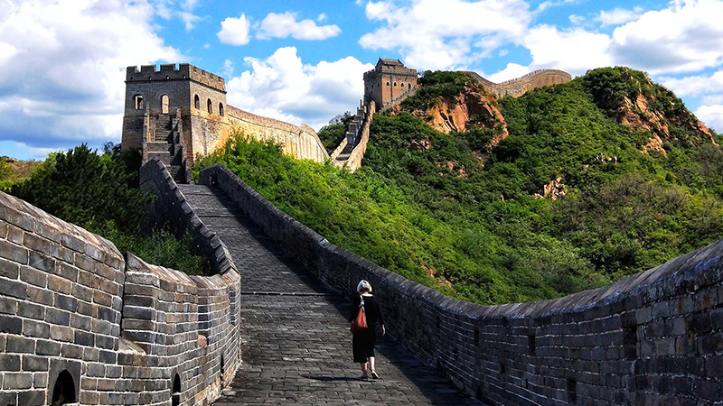
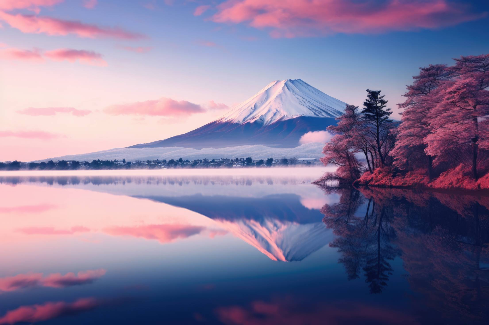

See the following Top Five best places across ASIA Continent

phi phi islands
Location: Off the coast of Phuket.
Best Time to Visit: November-April.
Info: Famous for pristine beaches, turquoise waters, and vibrant marine life.

Mount bromo
Location: East Java.
Best Time to Visit: May-August.
Info: An active volcano offering surreal sunrise views and crater treks.

Goa Beach
Location:goa
Best Time to Visit:april,march

Great Wall Of Chaina
Location: Beijing, China.
Best Time to Visit: April-May or September-October.
Info: This iconic ancient structure spans thousands of miles, offering breathtaking views of China's landscapes and history.

Mount Fuji
Location: Honshu Island, near Tokyo.
Best Time to Visit: July-September (climbing season).
Info: Japan’s highest peak and a UNESCO site, it’s a symbol of serenity and adventure.